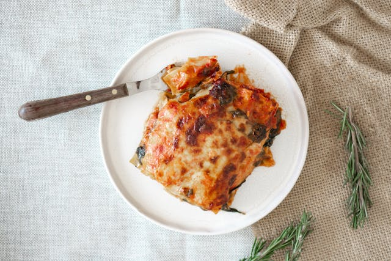

Home
Lasagna

Description
Lasagna can be time consuming but well worth it. The combination of pasta, hamburger, cheese and spices will have you coming back for more!
Ingredients
1 pound sweet Italian sausage
¾ pound lean ground beef
½ cup minced onion
2 cloves garlic, crushed
Tomato Sauce of your choice
½ cup water
4 tablespoons chopped fresh parsley, divided
1 ½ teaspoons dried basil leaves
1 ½ teaspoons salt, divided, or to taste
1 teaspoon Italian seasoning
¼ teaspoon ground black pepper
12 lasagna noodles
16 ounces ricotta cheese
1 egg
¾ pound mozzarella cheese, sliced
¾ cup grated Parmesan cheese
Prepare The Lasagna
preheat oven to 375F
Make the meat sauce by cooking the meat and adding the pasta sauce.
Cook the noodles al dente. Check the box.
Make the ricotta mixture by adding the egg, italian seasoning, parsley, salt, black pepper.
Layer the lasagna.
Cover with foil and bake for 25 mins then uncovered for 25 mins.
Recipe modified from World's Best Lasagna
Photo by Anna Guerrero